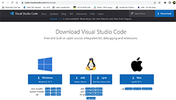
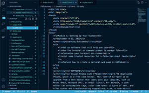
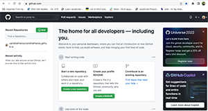
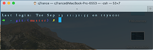

Thoughts on Module 1: Setting Up Your System
 |
by Caroline J. France |
| Updated: September 13, 2022 | |
This documentation includes my notes on MiT's Full Stack Development Course, September 6-12, 2022. It includes my reflections on MiT's learning outcomes, my experiences, and links to resources.
Learning Outcomes
- Set up software that will help you code
- Customize your terminal environment
- Use the terminal or command prompt to manage files
- List some trusted resources for information about JavaScript
- Explain how to create a personal web page in GitHub
|  | (A) Visual Studio Code (VSCode) I downloaded VSCode, which is a free code editor. This kind of software is an upgrade from a text editor that comes pre-installed on a computer, such as Notes (Mac), Notepad (PC), or Gedit (Linux). For example, a code editor can autocomplete tags, color code specific types of text, and offer syntax and troubleshooting suggestions. Also, a code editor enables me to have multiple kinds of files opened at once (.html, .css, .js), which is useful when working on a website. Also, I installed the following extensions in VS Code:
|
|  | (C) GitHub I downloaded GitHub for Mac users. I created and uploaded my portfolio, and I created a repository for this website. |
|  | (B)
Terminal Since I use a Mac, I updated my Terminal to zsh. Also, I downloaded iTerm2 , which was recommended by a MiT learning facilitator as an improvement over the original. (2) I customized the appearance of my Terminal under Terminal/Preferences/Profiles. I modified the Pro theme: background color and effects switched to very dark gray at 80% opacity, text switched to Hoefler Text 14 pt, pale cyan, white bold, 1.5 vertical spacing, and a block cursor. This is the easiest format for me to read. |
(3) USE THE TERMINAL / COMMAND PROMPT
I found
Codecademy's "Learn the Command Line" tutorial to be extremely helpful. It offers explanations,
hands-on guided instructions, and projects that help users apply what they've learned. I definitely recommend this.
While I can successfully manipulate the Terminal on my local computer, I'm still struggling with committing files to
GitHub (15.09.2022). I plan to read more tutorials on this topic.
- TUTORIAL: Codecademy's Learn JavaScript tutorial
- REFERENCE: MDN's JavaScript tutorial and reference.
- Q&A / REFERENCE: Stack Overflow's Questions on JavaScript. Tip: use square brackets around key words for better search results.
| Here is a link to an ~8 minute video tutorial that I created: How to Create a Personal Webpage for GitHub. This video explains how to create a simple html profile page, how to install GitHub, and how to upload files to GitHub. It is posted to my YouTube page. |